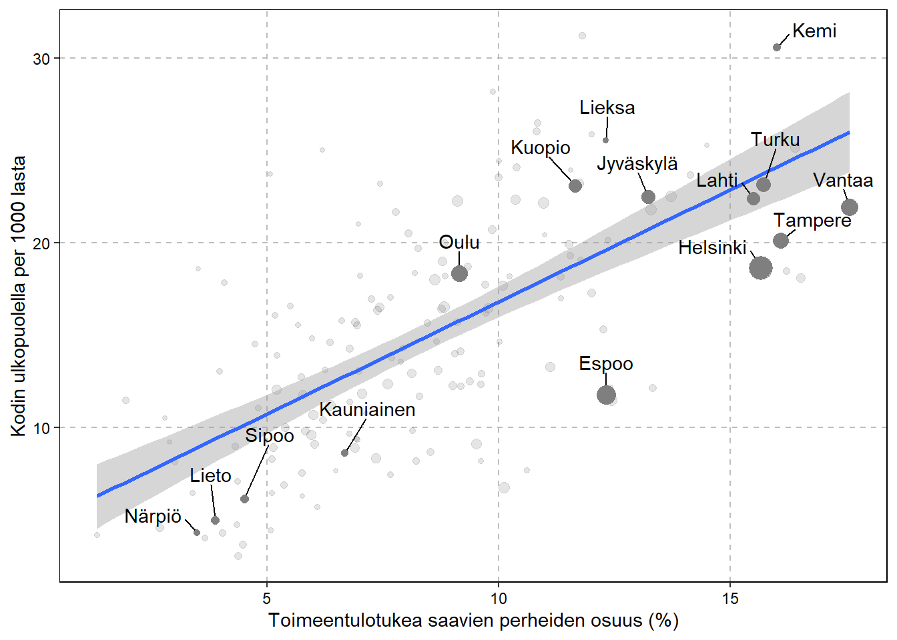

Figures for Increasing association between child poverty and out-of-home care
Dowloading all packages
Development of social assistance use in families with children in municipalities
Code
country_total <-
filter(dsw.d, region.class == "MAA" & gender == "total")
figure <- ggplot(data = country_total,aes(x = year, y = poverty ))
figure +
geom_line(aes(), size=1) +
geom_text(data=. %>%
arrange(desc(year)) %>%
slice(1),
aes(label=round(poverty, digits = 1)),
position=position_nudge(y = 2, x = -0.6),
hjust=0,
show.legend=FALSE) +
geom_point(data=. %>%
arrange(desc(year)) %>%
slice(1), size = 3) +
geom_point(data=. %>%
arrange(desc(-year)) %>%
slice(1), size = 3) +
geom_text(data=. %>%
arrange(desc(-year)) %>%
slice(1),
aes(label=round(poverty, digits = 1)),
position=position_nudge(y= 2, x= -0.6),
hjust=0,
show.legend=FALSE) +
geom_line(data = municipalities_total,
aes(x = year, y = poverty, group = region),
alpha = 0.05, size = 1) +
ylab("Families receiving social assistance (%)") 
Association between child poverty and out-of-home care
Code
teema <- theme(
plot.background = element_rect(fill = "transparent", colour = "transparent"),
panel.background = element_rect(fill = "transparent", colour = "gray"),
panel.border = element_rect(fill = "transparent", colour = "black"),
axis.text = element_text(color = "black"),
panel.grid.major = element_line(colour = "grey", linetype = "dashed"),
strip.background = element_rect(fill = "transparent", colour = "transparent"),
panel.spacing.x = unit(4, "mm"),
legend.background = element_blank(),
legend.box.background = element_blank(),
legend.key = element_blank())
data <- filter(dsw.d, gender=="total" & region.class == "KUNTA")
p <- ggplot(data, aes(poverty, ohc, size=total_chld_n))
# Add regression line
p + geom_point(alpha = 0.1) +
geom_smooth(method = "lm") +
facet_wrap(~year) +
xlab("Families receiving social assistance (%)") +
ylab("Out-of-home care per 1000 children") +
teema +
scale_size(guide="none") Code
data <- filter(dsw.d, gender=="total" & region.class == "KUNTA" & year == 2020)
p <- ggplot(data, aes(poverty, ohc, size=total_chld_n))
# Add regression line
p + geom_point(alpha = 0.1) + geom_smooth(method = "lm") +
xlab("Toimeentulotukea saavien perheiden osuus (%)") + ylab("Kodin ulkopuolella per 1000 lasta") +
teema +
scale_size(guide="none") +
geom_text_repel(data = filter(data, childr_n> 18000 | region.name == "Sipoo" | region.name == "Lieksa"
| region.name == "Kauniainen" | region.name == "Lieto"
| region.name == "Närpiö" | region.name == "Kemi"),
aes(label = region.name, size = NULL, color = NULL), nudge_y = 1.75, box.padding = 0.5, max.overlaps = Inf) +
geom_point(data = filter(data, childr_n> 18000 | region.name == "Sipoo" | region.name == "Lieksa"
| region.name == "Kauniainen" | region.name == "Lieto"
| region.name == "Närpiö" | region.name == "Kemi"), color = "grey50")
Association between social assistance use and out-of-home care in larger geographical units (maakunta)
Code
data <- filter(dsw.d, gender=="total" & region.class == "MAAKUNTA")
p <- ggplot(data, aes(poverty, ohc, size=total_chld_n))
# Add regression line
p + geom_point(alpha = 0.1) +
geom_smooth(method = "lm") +
facet_wrap(~year) + xlab("Families receiving social assistance (%)") +
ylab("Out-of-home care per 1000 children") +
teema +
scale_size(guide="none")